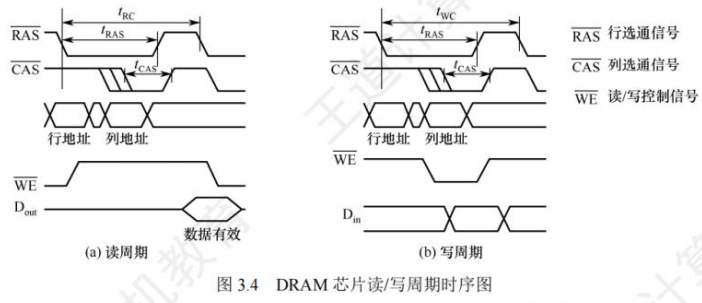
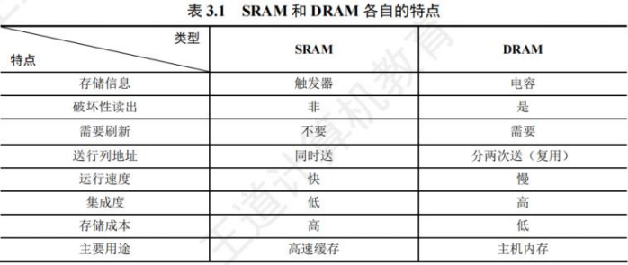
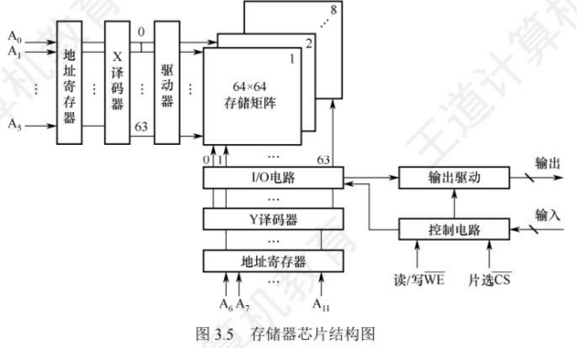
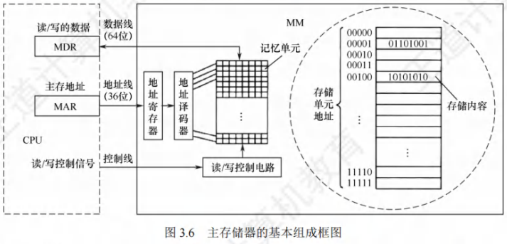
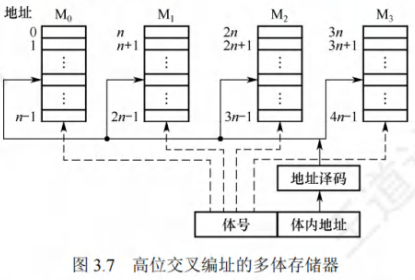
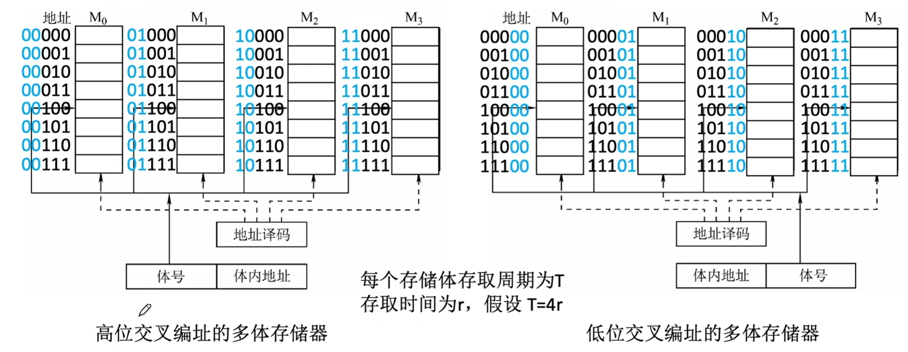
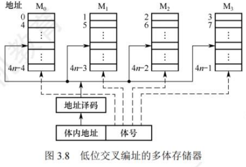
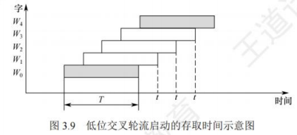

主存储器
[toc]
SRAM芯片和DRAM芯片
半导体存储器分为随机存储器(RAM)和只读存储器(ROM)。
RAM又分为静态随机存储器(SRAM)和动态随机存储器(DRAM)，主存储器主要由DRAM实现，靠近处理器的那一层(Cache)则由SRAM实现，它们都是易失性存储器。
ROM是非易失性存储器。
SRAM的工作原理
通常把存放一个二进制位的物理器件称为存储元，它是存储器最基本的构件。
地址码相同的多个存储元构成一个存储单元，若干存储单元的集合构成存储体。
静态随机存储器(SRAM)的存储元是用双稳态触发器(六晶体管MOS)来记忆信息的，静态是指即使信息被读出后，它仍保持其原状态而不需要再生(非破坏性读出)。
SRAM的存取速度快，但集成度低，功耗较大，价格昂贵，一般用于高速缓冲存储器。
DRAM的工作原理
与SRAM的存储原理不同，动态随机存储器(DRAM)是利用存储元电路中栅极电容上的电荷来存储信息的，DRAM的基本存储元通常只使用一个晶体管，所以它比SRAM的密度要高很多。
相对于SRAM来说，DRAM具有集成度高、位价低和功耗低等优点，但DRAM的存取速度比SRAM慢，且必须定时刷新和读后再生，一般用于大容量的主存系统。
DRAM电容上的电荷一般只能维持1~2ms，因此即使电源不断电，信息也会自动消失。
此外，读操作会使其状态发生改变(破坏性读出)，需读后再生，这也是称其为动态存储器的原因。
刷新可以采用读出的方法进行，根据读出内容对相应单元进行重写，即读后再生。对同一行进行相邻两次刷新的时间间隔称为刷新周期，通常取2ms。
常用的刷新方式有以下3种:
- 集中刷新：在一个刷新周期内，利用一段固定的时间，依次对存储器的所有行进行逐一再生，在此期间停止对存储器的读/写操作，称为死时间，也称访存死区。
- 优点是读/写操作时不受刷新工作的影响；缺点是在集中刷新期间(死区)不能访问存储器。
- 分散刷新：将一个存储器系统的工作周期分为两部分:前半部分用于正常的读/写操作，后半部分用于刷新。这种刷新方式增加了系统的存取周期，如存储芯片的存取周期为0.5μs，则系统的存取周期为1μs。
- 优点是没有死区；缺点是加长了系统的存取周期。
- 异步刷新：结合了前两种方法，使得在一个刷新周期内每一行又刷新一次。具体做法是将刷新周期除以行数，得到相邻两行之间刷新的时间间隔t，每隔时间t产生一次刷新请求。
- 优点是使"死时间"的分布更加分散，避免让CPU连续等待过长的时间。
DRAM的刷新需要注意以下问题:
- 刷新对CPU是透明的，即刷新不依赖于外部的访问。
- DRAM的刷新单位是行，由芯片内部自行生成行地址。
- 刷新操作类似于读操作，但又有所不同。另外，刷新时不需要选片，即整个存储器中的所有芯片同时被刷新。
注意：虽然DRAM的刷新和再生都是恢复数据，但刷新与再生的过程并不完全相同。刷新是以行为单位，逐行恢复数据的，而再生仅需恢复被读出的那些单元的数据。
- 目前更常用的是SDRAM(同步DRAM)芯片
- 其工作方式与传统DRAM的不同，传统DRAM与CPU采用异步方式交换数据，CPU发出地址和控制信号后，经过一段延迟时间，数据才读出或写入，在读/写完成之前，CPU不能做其他工作。
- 而SDRAM与CPU采用同步方式交换数据，它将CPU发出的地址和控制信号锁存起来，CPU在其读/写完成之前可进行其他操作。
- SDRAM的每一步操作都在系统时钟的控制下进行，支持突发传输方式。第一次存取时给出首地址，同一行的所有数据都被送到行缓冲器，因此，以后每个时钟都可以连续地从SDRAM输出一个数据。
- 行缓冲器用来缓存指定行中整行的数据，其大小为"列数×位平面数"，通常用SRAM实现。
DRAM芯片的读/写周期
DRAM芯片读/写周期的时序图如图3.4所示。
为了使芯片能正确接收行、列地址并实现读写操作，各信号的时间关系应符合一定要求。读(写)周期时间tRC(tWC)表示DRAM芯片进行两次连续读(写)操作时所必须间隔的时间。
- 读周期：在RAS有效前将行地址送到芯片的地址引脚，CAS滞后RAS一段时间，在CAS有效前再将列地址送到芯片的地址引脚，RAS、CAS应分别至少保持tRAS和tCAS的时间。在读周期中WE为高电平，并在CAS有效前建立。
- 写周期：行列选通信号的时序关系和读周期相同。在写周期中WE为低电平，同样在CAS有效前建立。为了保证数据可靠地写入，写数据必须在CAS有效前在数据总线上保持稳定。

SRAM和DRAM的比较

存储器芯片的内部结构
存储器芯片由存储体、I/O读/写电路、地址译码器和控制电路等部分组成。

- 存储体(存储矩阵)：存储体是存储单元的集合，它由行选择线(X)和列选择线(Y)来选择所访问单元，存储体的相同行、列上的多位(位平面数)同时被读出或写入。
- 地址译码器：用来将地址转换为译码输出线上的高电平，以便驱动相应的读/写电路。地址译码有单译码法(一维译码)和双译码法(二维译码)两种方式。
- 单译码法：只有一个行译码器，同一行中所有存储单元的字线连在一起，同一行中的各单元构成一个字，被同时读出或写入。缺点是地址译码器的输出线数过多。
- 双译码法：如图3.5所示，地址译码器分为X和Y方向两个译码器，在选中的行和列交叉点上能确定一个存储单元，这是DRAM芯片目前普遍采用的译码结构。
- I/O控制电路：用以控制被选中的单元的读出或写入，具有放大信息的作用。
- 片选控制信号：单个芯片容量太小，往往满足不了计算机对存储器容量的要求，因此需用一定数量的芯片进行存储器的扩展。在访问某个字时，必须"选中"该存储字所在的芯片，而其他芯片不被"选中"，因此需要有片选控制信号。
- 读/写控制信号：根据CPU给出的读命令或写命令，控制被选中单元进行读或写。
只读存储器
只读存储器(ROM)的特点
ROM和RAM都是支持随机访问的存储器，其中SRAM和DRAM均为易失性半导体存储器。而ROM中一旦有了信息，就不能轻易改变，即使掉电也不会丢失。
ROM具有两个显著的优点：
- 结构简单，所以位密度比可读/写存储器的高。
- 具有非易失性，所以可靠性高。
ROM的类型
根据制造工艺的不同，ROM可分为掩模式只读存储器(MROM)、一次可编程只读存储器(PROM)、可擦除可编程只读存储器(EPROM)、Flash存储器和固态硬盘(SSD)。
- 掩模式只读存储器：
- MROM的内容由半导体制造厂按用户提出的要求在芯片的生产过程中直接写入，写入以后任何人都无法改变其内容。
- 优点是可靠性高，集成度高，价格便宜；缺点是灵活性差。
- 一次可编程只读存储器：
- PROM是可以实现一次性编程的只读存储器。允许用户利用专门的设备(编程器)写入自己的程序，一旦写入，内容就无法改变。
- 可擦除可编程只读存储器：
- EPROM不仅可以由用户利用编程器写入信息，而且可以对其内容进行多次改写。EPROM虽然既可读又可写，但它不能取代RAM，因为EPROM的编程数有限，且写入时间过长。
- Flash存储器：
- Flash存储器是在EPROM的基础上发展起来的，它兼有ROM和RAM的优点，可在不加电的情况下长期保存信息，又能在线进行快速擦除与重写。
- Flash存储器既有EPROM价格便宜、集成度高的优点，又有EPROM电可擦除重写的特点，且擦除重写的速度快。
- 固态硬盘(Solid State Drive,SSD)：
- 基于闪存的固态硬盘是用固态电子存储芯片阵列制成的硬盘，由控制单元和存储单元(Flash芯片)组成。
- 保留了Flash存储器长期保存信息、快速擦除与重写的特性，且比传统硬盘具有读/写速度快、低功耗的特性，缺点是价格较高。
主存储器的基本组成
图3.6是主存储器(Main Memory, MM)的基本框图
- 由一个个存储0或1的记忆单元(也称存储元件)构成的存储矩阵(也称存储体)是存储器的核心部件
- 存储元件是具有两种稳态的能表示二进制0和1的物理器件
- 为了存取存储体中的信息，必须对存储单元编号(也称编址)
- 编址单位是指具有相同地址的那些存储元件构成的一个单位，可以按字节编址，也可以按字编址
- 现代计算机通常采用字节编址方式，此时存储体内的一个地址中有1字节

-
指令执行过程中需要访问主存时，CPU首先把被访问单元的地址送到MAR中，然后通过地址线将主存地址送到主存中的地址寄存器，以便地址译码器进行译码，选中相应单元，同时CPU将读/写信号通过控制线送到主存的读/写控制电路。
-
写操作：CPU同时将要写的信息送到MDR中，在读/写控制电路的控制下，经数据线将信号写入选中的单元。
-
读操作：主存读出选中单元的内容送至数据线，然后被送到MDR中。
-
-
MDR 的位数与数据线的位数相同，MAR的位数与地址线的位数相同。
- 图3.6采用64位数据线，所以在按字节编址方式下，每次最多可以存取8个单元的内容。
-
地址线的位数决定了主存地址空间的最大可寻址范围。
- 例如，36位地址的最大寻址范围为~，即地址从0开始编号。
-
注意：数据线的位数通常等于存储字长，因此MDR的位数通常等于存储字长；若数据线的位数不等于存储字长，则MDR的位数由数据线的位数决定。
-
DRAM芯片容量较大，地址位数较多，为了减少芯片的地址引脚数，通常采用地址引脚复用技术，行地址和列地址通过相同的引脚分先后两次输入，这样地址引脚数可减少一半。
-
假定有一个位DRAM芯片的存储阵列，其行数为，列数为，则。存储阵列的地址位数为n，其中行地址位数为，列地址位数为，则。由于DRAM芯片采用地址引脚复用技术，为减少地址引脚数，应尽量使行、列位数相同，即满足最小。又由于DRAM按行刷新，为减少刷新开销，应使行数较少，因此还需满足。
多模块存储器
多模块存储器是一种空间并行技术，利用多个结构完全相同的存储模块的并行工作来提高存储器的吞吐率。
常用的有单体多字存储器和多体低位交叉存储器。
注意：CPU的速度比存储器快得多，若同时从存储器中取出条指令，就可以充分利用CPU资源，提高运行速度。多体交叉存储器就是基于这种思想提出的。
单体多字存储器
- 在单体多字系统中，每个存储单元存储个字，总线宽度也为个字，一次并行读出个字。
- 在一个存取周期内，从同一地址取出条指令，然后将指令逐条送至CPU执行，即每隔存取周期，CPU向主存取一条指令。这显然提高了单体存储器的工作速度。
- 缺点：只有指令和数据在主存中连续存放时，这种方法才能有效提升存取速度。一旦遇到转移指令，或操作数不能连续存放时，这种方法的提升效果就不明显。
多体并行存储器
- 多体并行存储器由多体模块组成。
- 每个模块都有相同的容量和存取速度，各模块都有独立的读/写控制电路、地址寄存器和数据寄存器。
- 它们既能并行工作，又能交叉工作。
- 多体并行存储器分为高位交叉编址和低位交叉编址两种。
高位交叉编址(顺序方式)
- 高位地址表示模块号(或体号)，低位地址为模块内地址(或体内地址)。
- 如图3.7所示，存储器共有4个模块～，每个模块有个单元，各模块的地址范围如图中所示。
- 在高位交叉方式下，总把低位的体内地址送到由高位体号确定的模块内进行译码。
- 访问一个连续主存块时，总是先在一个模块内访问，等到该模块访问完才转到下一个模块访问，CPU总是按顺序访问存储模块，各模块不能被并行访问，因而不能提高存储器的吞吐率。
- 注意：模块内的地址是连续的，存取方式仍是串行存取，因此这种存储器仍是顺序存储器。


低位交叉编址(交叉方式)
- 低位地址为模块号，高位地址为模块内地址。
- 如图3.8所示，每个模块按“模”交叉编址，模块号 = 单元地址，假定有个模块，每个模块有个单元，则单元位于；单元位于；以此类推。
- 低位交叉方式下，总是把高位的体内地址送到由低位体号所确定的模块内进行译码。
- 程序连续存放在相邻模块中，因此称采用此编址方式的存储器为交叉存储器。
- 交叉存储器可以采用轮流启动或同时启动两种方式。

轮流启动方式
-
若每个模块一次读/写的位数正好等于数据总线位数，模块的存取周期为，总线周期为，为实现轮流启动方式，存储器交叉模块数应大于或等于：
-
按每隔个存取周期轮流启动各模块，则每隔个存取周期就可读出或写入一个数据，存取速度提高倍，图3.9展示了4体交叉轮流启动的时间关系。
-
交叉存储器要求其模块数大于或等于，以保证启动某模块后经过的时间后再次启动该模块时，其上次的存取操作已经完成(以保证流水线不间断)。
-
连续存取个字所需的时间为：
-
顺序方式连续读取个字所需的时间为。可见交叉存储器的带宽大大提高。
-
-
若访存地址出现在同一个模块内，则会发生访存冲突，此时需延迟发生冲突的访问请求。

同时启动方式
- 若所有模块一次并行读/写的总位数正好等于数据总线位数，则可以同时启动所有模块进行读/写。
- 设每个模块一次读/写的位数为位，模块数，当数据总线位数为位，个模块共提供位，正好构成一个存储字，因此应该同时启动个模块进行并行读/写。